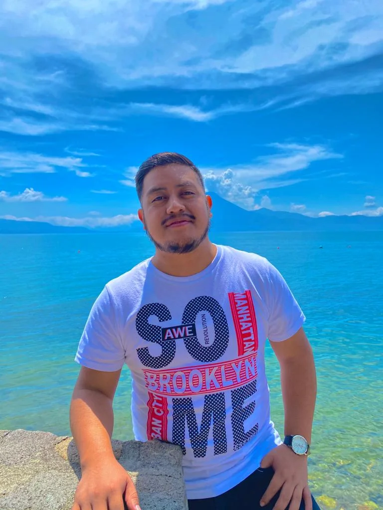

Adelso Tzep Chox | WDD 130
My name is Adelso, and I'm a student of software development at BYU Pathway Worldwide. Originally from Guatemala City, I am a member of The Church of Jesus Christ of Latter-day Saints. I served a mission in Brazil Salvador, which helped me become fluent in three languages: Spanish, Portuguese, and English. In my free time, when I'm not focused on my studies or my son, I love to watch movies, ten to music, and cheer on my favorite soccer teams.